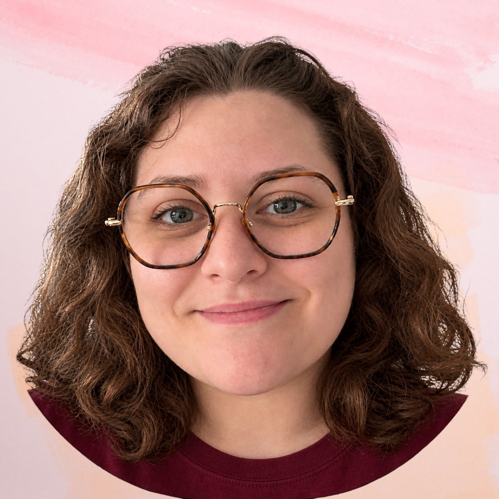

De l'idée à la mise en ligne, je mène mes projets de A à Z : logo, affiche et site web. Mon parcours en QHSE m'a appris la rigueur, mon DEUST m'apporte la technique.
Formation
- DEUST Webmaster, IUT de Calais (2026-2028)
- Remise à niveau PASS CNED (2025-2026)
- Master QHSE, IUT de Lille (2022-2024)
Expériences professionnelles
- Factrice La Poste - Berck (Nov 2025 - Déc 2025)
- Employée de DRIVE E.Leclerc - Étaples (Août 2025)
- Chargée QSE MAAS - Wavrin (Août 2023 - Sept 2024)
Compétences
- Adobe Illustrator (en cours)
- Adobe Premiere Pro (en cours)
- Adobe Photoshop (en cours)
- Adobe InDesign
- Visual Studio Code
- Git et GitHub
- Langage HTML (en cours)
Coordonnées
Savoirs
- Travail d'équipe
- Autonomie
- Curiosité
- Polyvalence
- Organisation
Langues
- Français : langue maternelle
- Anglais : niveau professionnel
Centres d'intérêt
- Photographie
- Jeux vidéo
- VTT